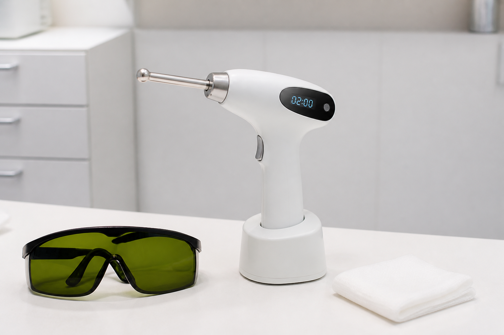

PÓS-OPERATÓRIO
Cirurgia feita.
Cuidado continua.
Nos primeiros dias, seguir o plano da equipe costuma ser tão importante quanto o procedimento.
ARRASTA PRO LADO

PRIMEIROS DIAS
Proteja a rotina de recuperação.
✓ Repouso conforme orientação
✓ Curativo como prescrito
✓ Medicamentos sem ajuste próprio
SINAIS QUE PEDEM CONTATO
Mudou ou piorou? Não espere sozinho.
Febre, dor que aumenta, secreção, sangramento persistente, vermelhidão que se espalha ou abertura da ferida merecem contato com o cirurgião conforme sua alta.
CADA CIRURGIA, UM PLANO
Recuperar não é seguir receita da internet.
ORIENTAÇÃO DE ALTA
CURATIVO · REPOUSO
RETORNO ÀS ATIVIDADES · REVISÃO

FOTOBIOMODULAÇÃO
Complemento, quando faz sentido.
A PBM pode ser considerada pela equipe como recurso complementar à recuperação dos tecidos. Indicação, parâmetros e momento são individuais.

LEVE O PLANO PARA A REVISÃO
Informação boa ajuda você a perguntar melhor.
Salve este guia e confira com sua equipe quais cuidados, sinais de alerta e recursos complementares fazem sentido no seu caso.
SALVE PARA A PRÓXIMA REVISÃO
DEPOIS
DEPOIS
CURATIVO
 RETORNO
PLANO
COMPLEMENTO
CUIDADO
RETORNO
PLANO
COMPLEMENTO
CUIDADO